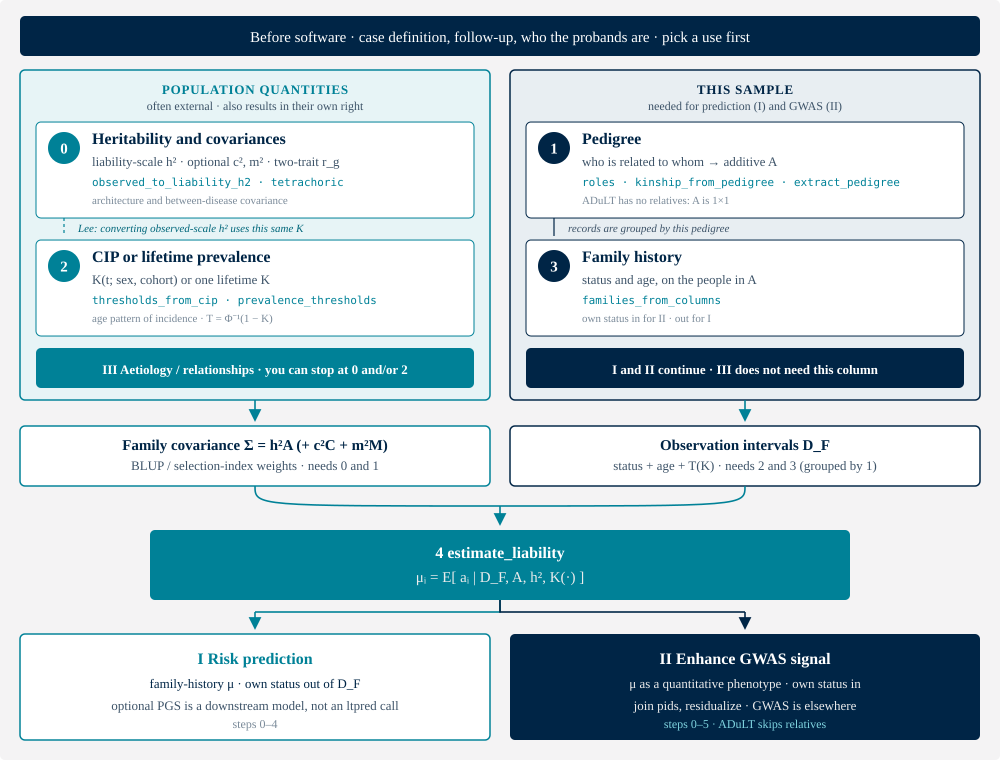

Vignette: how to run ltpred¶
ltpred estimates each proband's posterior mean genetic liability
and writes it as the genetic column. That column is not a SNP polygenic
score and not an absolute risk. What you do with it — and whether you
need it at all — depends on the use. Pearson–Aitken (PA) is the
single-trait default; Gibbs is the sampler.
There are at least three uses. Pick one before building \(D_F\): own status in versus out is not a later toggle.
Table 1. Three uses. Use III can stop at step 0 and/or 2; I and II need the estimator.
| Question | Steps | Own status | Notes | |
|---|---|---|---|---|
| I | Risk prediction from family history, optionally with a PGS | 0–4 | out of \(D_F\) | \(\mu_i\) is a predictor of the diagnosis, so that diagnosis must not leak into it. A PGS is a downstream combination (Hujoel et al. 2022; Dybdahl Krebs et al. 2026), not an ltpred call. |
| II | Enhance the association signal in a GWAS | 0–5 | in | \(\mu_i\) is a quantitative GWAS phenotype of that diagnosis (Hujoel et al. 2020). ADuLT skips relatives (steps 1 and 3). |
| III | Disease relationships and aetiology | 0 and/or 2 | — | Liability-scale \(h^2\) and \(r_g\) constrain genetic architecture and how two diseases relate. The CIP is the age/sex/cohort pattern of incidence. Pedigree, family history and \(\mu_i\) are optional. Fitting \(h^2\) from the same families is optional and is a different contract (Inference). |
Equation (1) names four inputs. Figure 1 is that recipe as a flow, with the three uses as exits. The methods note uses the same I/II/III numbering. Table 2 lists the corresponding calls. You are not missing a hidden software step. Classic LT-FH uses one lifetime \(K\) in step 2 instead of a CIP curve. Two-trait work adds a genetic covariance in step 0 and uses Gibbs in step 4.

Figure 1. How the inputs assemble, and where you can stop. The left column is the population model: liability-scale \(h^2\) (optional \(c^2\), \(m^2\), \(r_g\)) and the CIP or lifetime \(K\). Use III can stop there. The right column is this sample: the pedigree \(A\) and the relatives' (and optionally the proband's) status and age. Those become \(\Sigma=h^2A\) and the observation intervals \(D_F\). Step 4 is the first call that conditions on all four. Use I takes \(\mu_i\) with own status out; use II takes \(\mu_i\) with own status in and hands it to a GWAS (not an ltpred routine).
The numbering is the order you assemble (1), not a Gantt chart. Steps 0–3 can be prepared in parallel except for three real dependencies:
- \(h^2\) scales \(A\). You can build the pedigree without a heritability, but you cannot form \(\Sigma=h^2A\) without both 0 and 1. ADuLT is the \(1\times 1\) case.
- CIP before family history. Status and age are a register table until \(T_i=\Phi^{-1}(1-K_i)\) turns them into intervals on liability. That is why 3 follows 2.
- Pedigree before family history. Rows of \(D_F\) are grouped by
fam_id/ roles (or kinship column order). That is why 3 follows 1.
Lee's map is the only backward arrow: converting an observed-scale \(h^2\) uses the same population \(K\) as the thresholds.
Table 2. What to do, in order. Function names only; the dependencies are in Figure 1. Skip steps that Table 1 says the use does not need.
| Step | You supply | ltpred |
|---|---|---|
| — | Case definition, who the probands are | not software |
| 0 | Liability-scale \(h^2\); optional \(c^2\), \(m^2\); two-trait \(r_g\) | observed_to_liability_h2, tetrachoric; optionally fit_heritability |
| 1 | Who is related to whom | roles, or kinship_from_pedigree / extract_pedigree |
| 2 | Prevalence or CIP \(K(\cdot)\) | prevalence_thresholds or thresholds_from_cip |
| 3 | Status and ages (family history) | families_from_columns |
| 4 | — | estimate_liability |
| 5 | People to score (I) or genotype (II) | join pids; GWAS / PGS combination is elsewhere |
A compact script that prints the numbers below is
examples/vignette.py
(pip install -e ".[fast]" then python examples/vignette.py). Quoted
figures use seed 1, \(n=800\) nuclear families, true \(h^2=0.5\), \(K=0.05\).
They check the API; they are not a benchmark. On real data, skip the
simulator and start from your table.
Before software¶
Fix a case definition, follow-up, and a family-history source that you are willing to defend (checklist). Decide who the probands are (usually the genotyped people). Pick a row of Table 1. Uses I and II disagree on whether the proband's own diagnosis enters \(D_F\); that choice is used in step 3, not as a later toggle on the estimator. Use III may not need a pedigree at all.
0. Heritability and covariances¶
For uses I and II, estimate_liability conditions on \(h^2\). Pass a
liability-scale value. An observed-scale number mis-calibrates
\(\hat{\mu}_i\) (ranking is more robust than the scale). For use III, \(h^2\)
and \(r_g\) can be the result.
Prefer an external estimate. A first-degree check is Falconer's \(h^2 \approx 2\rho_{\mathrm{tet}}\). The Lee map from an observed-scale estimate in a population sample is
\(K\) here is the same population prevalence as step 2 (the CIP plateau, or
the single lifetime \(K\) of classic LT-FH). If the GWAS over-samples cases,
pass that fraction as prop_cases.
from ltpred import tetrachoric, observed_to_liability_h2
po = tetrachoric(status_o, status_m) # parent–offspring statuses
2 * po.rho
float(observed_to_liability_h2(0.20, pop_prev=0.05)) # 0.893 at K = 0.05
On the simulated cohort below, \(\rho_{\mathrm{tet}}=0.237\) so \(2\rho_{\mathrm{tet}}=0.474\) against truth \(0.5\).
Optional sibship \(c^2\) and couple \(m^2\) go on the single-trait estimator
as c2 / m2 (\(h^2+c^2+m^2\le 1\)). Two traits need liability-scale
heritabilities and a genetic correlation: pass vector h2,
genetic_corrmat, and full_corrmat (Gibbs only).
Fitting \(h^2\) or \(A{+}C{+}M\) from the same families is a different
contract: independent, non-overlapping pedigrees, sampling="population"
or sampling="ipw" with known positive inclusion probabilities. A pid
in two fam_ids is rejected. Unguarded ascertainment pins \(\hat{h}^2=1\)
even when the truth is 0. Details: Inference.
1. Pedigree¶
You need \(A\), the additive relationships among the people whose records enter \(D_F\). Two routes.
Role grammar (nuclear and common extended families). Each label is
relative to the proband: o (optional own status), m/f, s1/s2,
grandparents mgm/pgf, half-sibs mhs1/phs1, avuncular mau1/pau1,
children c1.1. Number repeats. Same-side half-sibs are treated as full
sibs of each other — use the kinship path if that is false
(role grammar).
Parent pointers, for cousins, inbreeding, or messy second parents:
from ltpred import kinship_from_pedigree, extract_pedigree, build_parent_graph
_, A = kinship_from_pedigree(ids, father, mother)
# from population trio records:
graph = build_parent_graph(ids, father, mother)
ped = extract_pedigree(graph, proband_id, max_degree=3)
Scoring may use overlapping extracted pedigrees (one per proband). Fitting \(h^2\) in step 0 may not. ADuLT has no relatives: skip this step.
2. CIP or lifetime prevalence¶
For use III the CIP is the result: the age, sex and cohort pattern of incidence. For uses I and II it is an input to the thresholds below.
Thresholds give the interval for each observed liability. Classic LT-FH uses one \(T=\Phi^{-1}(1-K)\). LT-FH++ and ADuLT use a person-specific CIP
with \(t_i\) the age of onset for a case and the age at last follow-up for a
control. Use a population curve, stratified by sex, birth year, and
ancestry where incidence differs — not the logistic demo helper and not a
biobank case fraction. Competing death: Aalen–Johansen, not Kaplan–Meier
that treats death as censoring (CIP estimation).
Cover every analysed age; pass k_pop unless the last CIP value is a
defensible lifetime prevalence.
from ltpred import (
prevalence_thresholds, thresholds_from_cip,
kaplan_meier_cip, aalen_johansen_cip,
)
# classic LT-FH: one K
lower, upper = prevalence_thresholds(status, pop_prev=K)
# LT-FH++ / ADuLT: one call per stratum
lower, upper, K_i, K_pop = thresholds_from_cip(
status, age, cip_ages, cip_values, k_pop=lifetime_K, case_mode="pin",
)
case_mode="pin" is the LT-FH++ encoding (a case is a point mass at
\(T_i\)). Pin only when onset is the CIP inverse of liability. Most of the
onset information survives \([T_i,\infty)\). Base PA-FGRS instead uses the
lifetime case interval \([\Phi^{-1}(1-K_{\mathrm{pop}}),\infty)\) and
puts age into a censored control's mixture weight \(K_i\).
3. Family-history records¶
One row per observed person: fam_id, role (or a kinship column order),
status, age. Missing fam_id and duplicate roles in a family are
rejected. Join these records to the pedigree from step 1; the thresholds
from step 2 are the lower / upper columns.
Include role o for use II (\(\mu_i\) is a GWAS phenotype of that
diagnosis). Omit o, or give it \((-\infty,\infty)\), for use I (the
same diagnosis is the prediction target). ADuLT with o unbound has
nothing left to condition on. Use III may skip this step.
from ltpred import families_from_columns
families = families_from_columns(
fam_id, role, lower, upper, pid=pid,
K_i=K_i, K_pop=K_pop, # only for use_mixture=True
)
4. Estimate \(\mu_i\)¶
This is the ltpred run. Everything above is input.
from ltpred import estimate_liability
res = estimate_liability(families, h2=h2) # PA, single trait
# res = estimate_liability(families, h2=h2, method="gibbs", seed=1)
# res = estimate_liability(families, h2=h2, use_mixture=True)
score = res.genetic # aligned to res.pids
res.se["genetic"]is Monte-Carlo error in \(\hat{\mu}_i\) (exactly 0 under PA).res.var["genetic"]is \(\mathrm{Var}(a_i\mid D_F)\), which does not shrink with more draws.
PA is the default for one trait. Use Gibbs for a Monte-Carlo SE, multiple
traits, or an unusual no-mixture pedigree. The PA-FGRS mixture is PA-only.
The kinship entry point is estimate_liability_from_kinship(A, lower,
upper, h2=h2, target=0).
With relatives and a personalised CIP this is LT-FH++; with only role o
it is ADuLT; with one lifetime \(T\) and relatives it is classic LT-FH.
5. What you do with \(\mu_i\)¶
Use I (prediction). Join res.pids to the people whose risk you
want. Do not put the predicted diagnosis into \(D_F\). A PGS, if you have
one, is combined after this step — a target-population prediction
model, not something ltpred fits
(Hujoel et al. 2022;
Dybdahl Krebs et al. 2026).
Use II (GWAS). Join res.pids to genotyped IDs. Residualize for sex,
cohort, PCs, and batch, or put them in a mixed model. Prefer an
association method that handles relatedness if related targets remain.
ltpred does not run the GWAS.
Use III does not need this step. The quantities of interest were \(h^2\), \(r_g\), and/or \(K(\cdot)\) in steps 0 and 2.
Stand-in cohort (simulated classic LT-FH)¶
The script builds a nuclear cohort so the calls above have something to
chew. use_age=False is classic LT-FH: one \(K\), not a CIP. On real data
this block is your table, not a simulator.
from ltpred import simulate_under_LTM_single, estimate_liability
import numpy as np
h2, K, n_fam = 0.5, 0.05, 800
sim = simulate_under_LTM_single(
fam_vec=["m", "f", "s1"], h2=h2, pop_prev=K, n_sim=n_fam,
use_age=False, seed=1,
)
pa = estimate_liability(sim.families, h2=h2)
status = sim.status["o"].astype(float)
true_g = sim.genetic
np.corrcoef(status, true_g)[0, 1] # 0.342
np.corrcoef(pa.genetic, true_g)[0, 1] # 0.419
An affected proband: \(\hat{\mu}_i=+0.947\), posterior variance \(0.271\).
An unaffected one: \(\hat{\mu}_i=-0.119\), variance \(0.430\). Relatives only
(no role o): \(\operatorname{Corr}=0.268\). ADuLT at one lifetime \(T\)
matches the 0/1 label (\(\operatorname{Corr}=0.342\)). PA versus Gibbs on 80
families: \(\operatorname{Corr}=0.9997\). Rebuilding the same families from
columns, and scoring them through kinship_from_pedigree, recovers the
role-grammar PA scores to numerical noise.
Where to go next¶
| One-page copy-paste | Quickstart |
| Which model to run | Choose a method |
| Roles, trios, real tables | Data preparation |
| Kaplan–Meier / Aalen–Johansen (use III may stop here) | CIP estimation |
| Engines, scaling, GWAS export | Estimation |
| Fitting \(h^2\) / \(A{+}C{+}M\) | Inference |
| Pre-flight list | Assumptions & checklist |
| Maths of (1) | Algorithm |